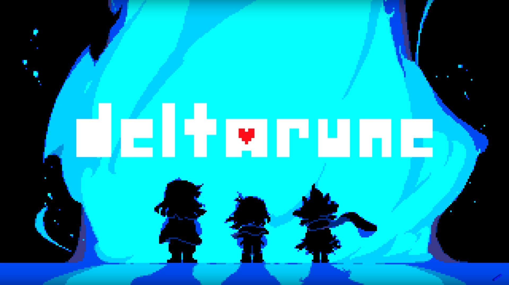
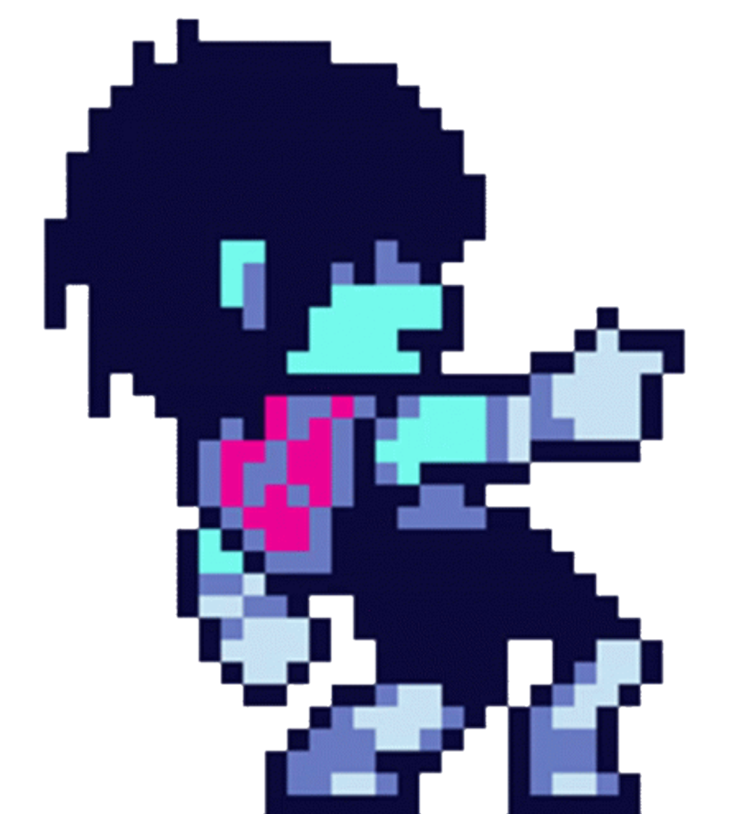
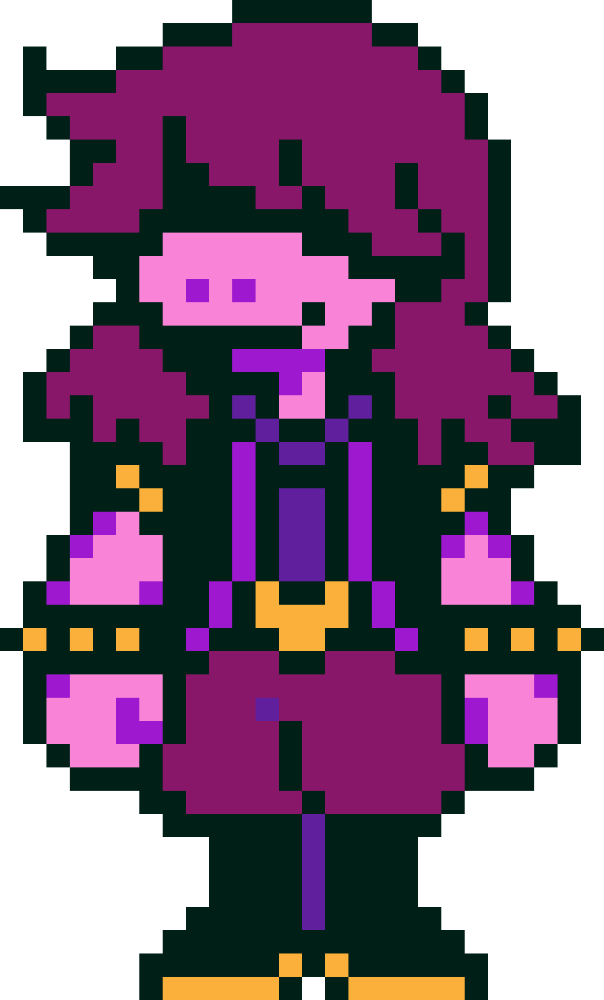
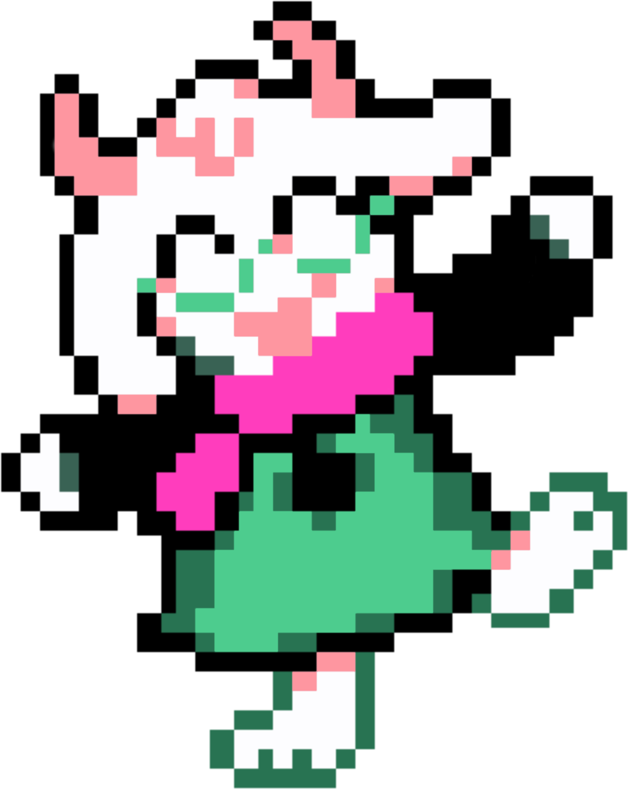
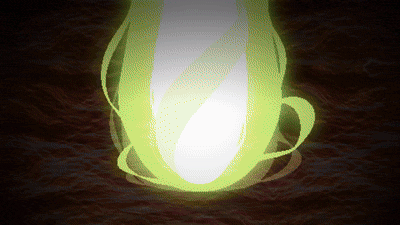

Notice: this as an unfinished project with upcoming changes.
INTRODUCING
DELTARUNE is a story-driven RPG set in a world where Light and Dark coexist. Follow Kris and their companions as they discover mysterious worlds, encounter unusual characters, and uncover the secrets surrounding their existence.

THE PROPHOSIZED ONES
A HUMAN, a MONSTER, and a PRINCE FROM THE DARK. Three heroes foretold by an ancient prophecy. Kris, Susie, and Ralsei are destined to seal the Dark Fountains and restore the balance between Light and Dark.

Kris

Susie

Ralsei
Today, the FOUNTAIN OF DARKNESS— The geyser that gives this land form— Stands tall at the center of the kingdom.
But recently, another fountain has appeared on the horizon...
And with it, the balance of LIGHT and DARK begins to shift...
AND THEIR DESNTINY
Dark Fountains give form to the Dark Worlds. But when the balance between Light and Dark is disrupted, a terrible calamity threatens to consume the world. The heroes must confront this growing threat before it is too late.

Animation done by @Galaksyz